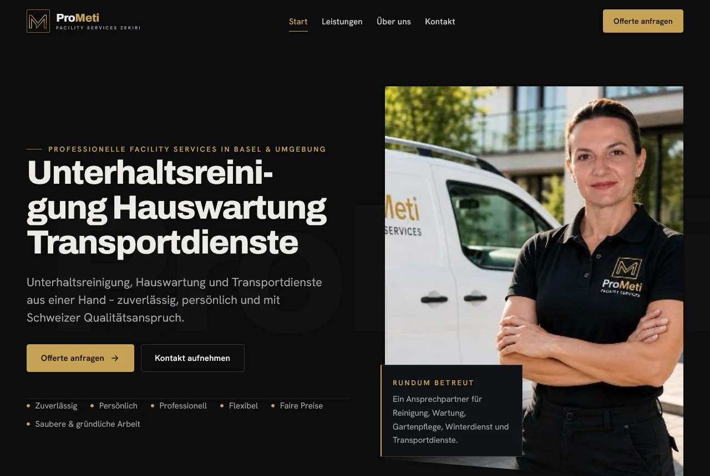
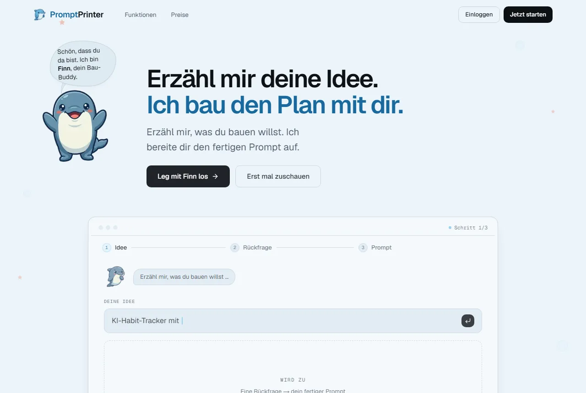

Zum Inhalt springen
kazuvate
Über uns
Leistungen
Referenzen
Ablauf
Kontakt
Unverbindlich anfragen
Referenzen

ProMeti Facility Services
, öffnet prometizekiri.com in einem neuen Tab

PromptPrinter
, öffnet promptprinter.app in einem neuen Tab
Bauen wir etwas, das funktioniert.
Unverbindlich anfragen